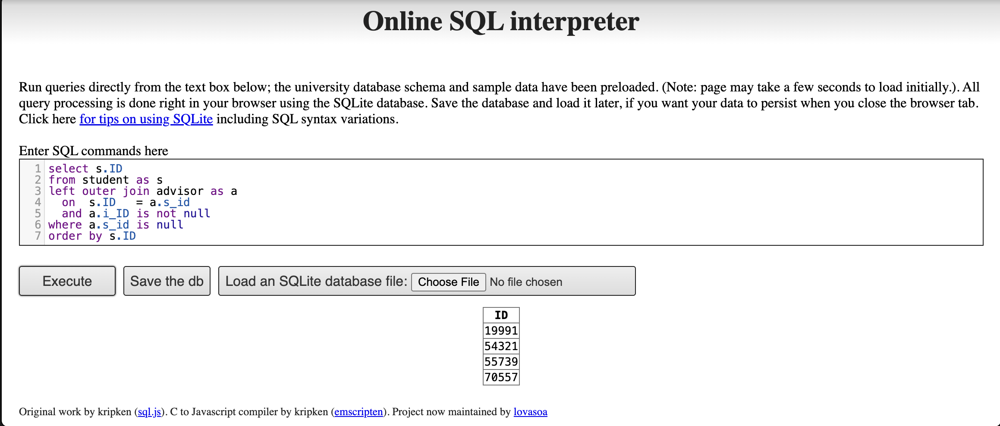

Question 1: Websites Using JSON and XML Data Representations
Overview
This section identifies and analyzes real-world websites that expose data in JSON and XML formats, examining their structure, composition, and the technologies used to build their underlying web databases.
API Endpoint Used:https://openlibrary.org/search.json?q=political+science&limit=3
Description: Open Library is an open, editable library catalog maintained by the Internet Archive. Its REST API returns bibliographic records in JSON format.
2. Fetch & Parse the JSON Data
url_json <-"https://openlibrary.org/search.json?q=political+science&limit=3"response_json <-GET(url_json)json_data <-content(response_json, as ="text", encoding ="UTF-8")parsed_json <-fromJSON(json_data, flatten =TRUE)# Top-level keyscat("Top-level keys in the JSON response:\n")
# Show key metadata fields from the first 3 resultsdocs <- parsed_json$docsdisplay_cols <-c("title", "author_name", "first_publish_year","publisher", "language", "subject")display_cols <-intersect(display_cols, names(docs))docs[1:3, display_cols] |>kbl(caption ="Sample Records from Open Library JSON Response") |>kable_styling(bootstrap_options =c("striped", "hover", "condensed"),full_width =FALSE)
Sample Records from Open Library JSON Response
title
author_name
first_publish_year
language
Power and Choice
W. Phillips Shively, W. Philips Shively , W. Phillips Shively
Shallow (1–2 levels); arrays used for multi-valued fields
Data types
Strings, integers, arrays of strings
Identifier
/works/OL...W path-style unique key
Structural characteristics: - Uses a flat envelope pattern: metadata wrapper (numFound, start) + a docs array - Multi-valued attributes (authors, publishers) are represented as JSON arrays, avoiding nested objects - The response is self-describing — field names travel with the data - No schema enforcement at the wire level (duck-typed)
4. Technologies & Methods
Technologies Powering Open Library's JSON API
Layer
Technology
Data Format
JSON (RFC 8259)
API Style
REST (REpresentational State Transfer)
Backend Language
Python (web.py / Flask heritage)
Database
PostgreSQL + Solr (full-text search index)
Hosting
Internet Archive infrastructure
Protocol
HTTPS / HTTP 1.1
Key points: - REST API maps HTTP verbs to resources; GET /search.json returns search results - Solr acts as the search/query layer, serializing results as JSON - PostgreSQL stores canonical catalog records; Solr indexes are rebuilt from it - jsonlite in R de-serializes the JSON into an R data frame in one call
Part (b): Website Using XML — PubMed E-utilities API (NCBI)
API Endpoint Used:https://eutils.ncbi.nlm.nih.gov/entrez/eutils/esearch.fcgi?db=pubmed&term=political+science&retmax=5&usehistory=n
Description: PubMed is the U.S. National Library of Medicine’s biomedical literature database. Its E-utilities REST API returns well-formed, namespace-free XML and is freely accessible without authentication — making it an ideal, stable example of XML data exchange on the web.
2. Fetch & Parse the XML Data
url_xml <-paste0("https://eutils.ncbi.nlm.nih.gov/entrez/eutils/","esearch.fcgi?db=pubmed&term=political+science&retmax=5&usehistory=n")response_xml <-GET(url_xml, add_headers("User-Agent"="R/httr student-assignment"))xml_text <-content(response_xml, as ="text", encoding ="UTF-8")xml_doc <-read_xml(xml_text)# Show root node name and child structurecat("Root node: "); print(xml_name(xml_doc))
<Id> inside <IdList> — one per returned PubMed article
Attributes
Minimal; used on <TranslationSet> and <QueryTranslation>
Nesting depth
2–3 levels: root → section elements → <Id> leaf nodes
Namespacing
None (flat, single-vocabulary document)
Encoding
UTF-8 declared in XML prolog
Structural characteristics: - Uses a data-centric XML model: machine-readable, tabular data expressed as nested elements rather than prose - <IdList> acts as a typed collection container — analogous to a JSON array — holding <Id> leaf nodes - The <WebEnv> and <QueryKey> elements implement server-side state (session caching), allowing subsequent efetch calls to retrieve full records without re-specifying the query - Fully well-formed and valid XML — can be validated against NCBI’s published DTD
4. Technologies & Methods
Technologies Powering the PubMed E-utilities XML API
Entrez database system (NCBI proprietary) backed by PostgreSQL-family RDBMS
Schema Validation
DTD (Document Type Definition) published by NCBI
Protocol
HTTPS (TLS 1.2+)
Key points: - DTD validation provides formal grammar for each E-utility response type — stricter than schema-optional JSON - Server-side query history (WebEnv / QueryKey) is a distinctive XML API pattern: state persists on the server and is referenced by token in subsequent requests - xml2::read_xml() + XPath (xml_find_all, xml_find_first) navigates the DOM tree without namespace complexity - PubMed’s Entrez system stores records in a hierarchical document store, with XML being the canonical serialization format — the database schema directly mirrors the XML element hierarchy
Comparative Summary
JSON vs XML: Side-by-Side Comparison
Dimension
JSON
XML
Syntax
Key-value pairs & arrays `{}`
Tagged elements & attributes `<tag>`
Verbosity
Compact
Verbose
Schema enforcement
Optional (JSON Schema, not required)
Strict via XSD / DTD
Namespacing
None (flat key namespace)
Namespaces via `xmlns:`
Typical use case
Web APIs, JavaScript apps, NoSQL stores
Enterprise systems, government data, document exchange
R parsing package
`jsonlite`, `rjson`
`xml2`, `XML`
Human readability
High
Moderate
Key Takeaways
JSON prioritizes simplicity and compactness — ideal for high-frequency REST calls in modern web apps. Open Library uses it with a Solr + PostgreSQL stack.
XML prioritizes rigor and interoperability — DTD/XSD validation and server-side session state make it the standard for scientific and government data exchange. PubMed E-utilities uses it with NCBI’s Entrez document-store backend.
Both examples implement REST architectures: resources are identified by URLs, data is returned in a stateless response body, and clients parse the payload without server-side session state.
In R, jsonlite::fromJSON() and xml2::read_xml() + XPath provide symmetric workflows for consuming both formats programmatically.
Semantics: Return every student ID that does not appear in the advisor table paired with a non-NULL instructor ID — i.e., students who have no assigned advisor.
Rewrite — LEFT OUTER JOIN (no subqueries, no set operations)
SELECT s.IDFROM student AS sLEFTOUTERJOIN advisor AS aON s.ID= a.s_idAND a.i_ID ISNOTNULLWHERE a.s_id ISNULLORDERBY s.ID;
Result

These four students have no matching row in the advisor table where i_ID IS NOT NULL, so they are returned by both the original EXCEPT query and the LEFT OUTER JOIN rewrite.
Part (ii): Instructors Who Teach Every Course in Their Department
Query — Relational Division via Double NOT EXISTS
SELECT i.ID, i.nameFROM instructor AS iWHERENOTEXISTS (SELECT c.course_idFROM course AS cWHERE c.dept_name = i.dept_nameANDNOTEXISTS (SELECT1FROM teaches AS tWHERE t.ID= i.IDAND t.course_id = c.course_id ) )ORDERBY i.name;
Logic — Double NOT EXISTS (Relational Division)
The pattern translates as a chain of two negations:
NOT EXISTS (
-- "a course in my department..."
SELECT course_id FROM course WHERE dept_name = instructor's dept
AND NOT EXISTS (
-- "...that I have NOT taught"
SELECT 1 FROM teaches WHERE ID = instructor AND course_id = that course
)
)
Combining both negations gives: “There is no department course this instructor has not taught” — logically equivalent to “This instructor has taught every course in their department.”
This is the standard relational division pattern: {courses taught by i} ⊇ {courses in i's dept}
Fix for GSSAPI error: add gssencmode = "disable" to bypass the Kerberos/GSSAPI handshake that causes the “Credential for asked mech-type mech not found” error on local connections. Also ensure password matches your actual PostgreSQL user password.
con <-dbConnect( RPostgres::Postgres(),dbname ="university",host ="localhost",port =5432,user ="postgres",password ="yourpassword!", # ← replace with your actual passwordgssencmode ="disable"# ← fixes the GSSAPI security context error)
(a) Query: All Instructors
instructor_data <-dbGetQuery(con, "SELECT * FROM instructor")head(instructor_data)
Query (a): head() of instructor table — 50 rows total in large-relations DB